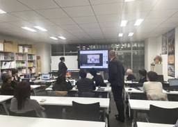

vicc blog
https://blog.vicc.jp/
株式会社ヴィックの技術ブログです。
フィード

ビジュアリゼーションレクチャー実施レポート｜伝わるパースの考え方
vicc blog
前田建設工業の若手社員向けに実施した「伝わるパースのつくり方」レクチャーのダイジェスト。表現技術だけでなく、プロセスや情報集約の重要性、クオリティを高める具体的な3つのチェックポイントを解説します。
2日前

FMのためのBIM(1)
vicc blog
建物の維持管理を最適化するFM（ファシリティマネジメント）とBIMの連携を解説。CAFMによる情報集約の仕組みや、BIM活用で設計・施工からのデータ損失を防ぎ、意思決定を迅速化する5つのメリットを紹介します。
1ヶ月前
FMのためのBIM(2)
vicc blog
BIMをFMに導入する実戦的フローを解説。新築・既存建物のデータ化手順から、設備情報の国際標準COBieのスプレッドシート構成、ソフト間連携を支えるIFCの重要性まで、運用フェーズの核心に迫ります。
1ヶ月前
台湾からリモートワークしてみました
vicc blog
コロナ禍で日本から台湾へ帰国し、隔離生活を送りながらフルリモートで働くメンバーの体験記。過酷な検疫を生き抜く工夫や、国境を越えた協働で不可欠な「信頼とセルフマネジメント」の極意を、個人の視点で綴ります。
1ヶ月前
Dynamoを使ってRevitに複数のファミリタイプの梁を作成する
vicc blog
Revitでの膨大なファミリタイプ作成を自動化するDynamo活用術を解説。Excelのリストを基に、構造梁や配管などのタイプ名と寸法パラメータを一括生成します。ツール間のコラボレーションを円滑にする実戦的Tipsです。
1ヶ月前
RevitでCAD図を読み込んだ時のめちゃくちゃな線種パターンをきれいにしよう
vicc blog
CAD図面のインポートで増殖し、手動では一括削除できないRevitの「ラインパターン」をDynamoで一掃する方法を解説。OOTBノードのみで構築し、特定キーワードで不要な線種を自動抽出・削除してファイルを健全に保ちます。
1ヶ月前
慶應で出題したGH演習問題を公開します
vicc blog
viccが担当している慶應SFCの授業である「建築技術論」で出題されたGrasshopper演習を公開。実在の鋼材規格を用い、パラメータ変化に追随する接合部パーツやボルト位置をモデリングします。図学的理解と実務的視点が問われる課題です。
1ヶ月前
大規模プロジェクトでのRhino運用#2- スクリプトによるバッチ処理
vicc blog
Rhinoで巨大モデルを扱う際、ファイルをパーツ単位に分割し、スクリプトとGrasshopper（Elefront）を組み合わせて一括処理する方法を解説。PCの負荷を抑えつつ、千単位の部材に共通の加工を自動適用する実戦的Tipsです。
1ヶ月前
大規模プロジェクトでのRhinoの運用#3 – LinkedBlock
vicc blog
RhinoのLinkedBlockを活用した階層的なモデル管理を解説。ボルト等の規格材の一括編集には便利ですが、深い入れ子構造による編集の煩雑さや参照循環の注意点も指摘。Worksessionとの使い分けの重要性を説きます。
1ヶ月前
大規模プロジェクトでのRhinoの運用方法#1
vicc blog
大規模プロジェクトで必須となる「Worksession」の運用術を解説。ファイルを分割して参照し合うことで、データの軽量化と複数人での同時作業を実現します。役割分担や誤操作防止など、実務的なメリットを伝えます。
1ヶ月前
RhinoPython の Tips #1 – スクリプトから Rhino のコマンドを実行する
vicc blog
RhinoPythonの基本関数「rs.Command()」を解説。コマンドマクロの特殊文字（!、_、-）の役割や、ダイアログを介さず自動処理を完結させるための具体的なTipsを、実証ログを交えて紹介します。
1ヶ月前
RhinoPython の Tips #2 – オブジェクトを適切に選択するための関数
vicc blog
RhinoPythonでのオブジェクト選択・取得関数を徹底解説。rs.GetObjectsによるユーザー選択や、レイヤーおよびGUIDによる自動取得など、バッチ処理のミスを防ぎ、効率化するための必須Tipsをまとめました。
1ヶ月前
RhinoPython の Tips #3 – 入力をサポートすることで細かな作業を減らす
vicc blog
RhinoPythonでの作業ミスを減らすUI構築Tips。日付自動取得やエクスプローラでのフォルダ指定、簡易UIの実装方法を解説。チームでのツール共有を円滑にする運用術を紹介します。
1ヶ月前
大規模プロジェクトでのRhino運用#4- スクリプトを用いてモデルを統合する
vicc blog
大規模プロジェクトでバラバラに作成されたRhinoの部材ファイルを、スクリプトで自動統合する方法を解説。フォルダ構成を指定し、インポートから保存までを一括処理することで、ヒューマンエラーを防ぎ業務効率化を図ります。
1ヶ月前
Elefrontについて#3 -Elefrontを用いた場合のワークフロー
vicc blog
Elefrontを用いた実践的なワークフロー解説の第三弾。User Attributesを活用し、複数のGH・Rhinoファイル間を横断してデータを引き継ぐ手法を紹介します。チームでの分担作業や処理速度低下の解決に直結する運用術です。
1ヶ月前
Elefrontについて#1 -Elefrontで何ができるのか
vicc blog
Elefrontを用いた実践的なワークフロー解説の第一弾。膨大なジオメトリを扱うプロジェクトで、属性情報を活用し、処理の軽量化や自動更新を実現するメリットを解説します。
1ヶ月前
Elefrontについて#2 -User Attributesとは
vicc blog
Elefrontを用いた実践的なワークフロー解説の第二弾。User Attributesを活用し、複数のGH・Rhinoファイル間でデータを引き継ぐ手法を紹介します。チーム分担や処理速度低下を解決する「情報のバトンパス」運用術です。
1ヶ月前
Elefrontについて#4 -User AttributesをつけてBake
vicc blog
Elefrontを用いた実践的なワークフロー解説の第四弾。User Attributesを活用し、複数のGH・Rhinoファイル間でデータを引き継ぐ手法を紹介します。チーム分担や処理速度低下を解決する「情報のバトンパス」運用術です。
1ヶ月前
Elefrontについて#5 -User Attributesを読み込んで利用する
vicc blog
Elefrontを用いた実践的なワークフロー解説の第五弾。前回定義したUser Attributesを活用し、3Dモデルから製品図（三面図・寸法・注釈）を自動生成するプロセスを解説します。データツリーの整理や2D配置の自動化など、量産設計に不可欠なTipsが満載です。
1ヶ月前
Grasshopperの可読性を高めるには
vicc blog
大規模プロジェクトでの協働を支える「読みやすいGrasshopper」の書き方を解説。操作系の集約やモジュール化、データの可視化など、チームの生産性を高め、デバッグ効率を劇的に向上させる実践的なTipsを紹介します。
1ヶ月前
Elefrontについて#6 -ブロックについて
vicc blog
Elefrontを用いた実践的なワークフロー解説の第六弾。外部フォルダのファイルをLinked Blockとして一括読み込み・配置する手法を紹介します。配置検討と詳細モデリングを分業化し、大規模モデルを軽量かつ正確に運用する秘訣を伝授。
1ヶ月前
DfMA：リア・ローディングからの脱却とVICCの役割
vicc blog
芝浦工大で開催された「DfMAシンポジウム Vol.2」登壇レポート。「リア・ローディングからの脱却」をテーマに、DfMAの本質や建設業界が抱える課題、全体最適化に向けたVICCの役割について考察します。
1ヶ月前
発注者視点のBIM--スタート地点としての5類型
vicc blog
viccがこれまで支援してきた「オーナー向けBIM」の知見を公開。多種多様な発注者を5つの型に分類し、特に多拠点展開する企業にBIMがマッチする理由を深掘りします。
1ヶ月前
祝ブログ開設3周年！人気記事TOP5振り返り
vicc blog
ブログ開設3周年🎉VlCCブログの人気記事TOP5を大公開！万博建築やBIM国際標準、高度なデジタル技術に関する記事を通じて、建設業界の技術変革の潮流を考察します。
2ヶ月前
BIMプロジェクトインフォメーションプラクティショナー資格を取ってみました
vicc blog
BIMプロジェクトインフォメーションプラクティショナーという資格を取ってみました。この長い名前の資格はなんなのか？どうしたら取れるのか？取ってみてどうだったか？を書きました。
2ヶ月前
ASAI 2025年カンファレンス報告会
vicc blog
VIZチーム照井による、10年ぶりに東京開催された建築イラストレーターの世界的団体「ASAI」カンファレンス参加レポートです 。見事「審査員賞」を受賞した喜びや 、対面ならではの貴重な交流の様子をお届けします 。
3ヶ月前
入札時におけるBIMパートナーの重要性
vicc blog
入札時のBIM要件の見落としは、受注後のコスト増や遅延を招きます。BIMを単なる成果物ではなく業務プロセス全般の基盤と捉え、複数の入札書類を横断的に紐解き、戦略的な提案を行う重要性について解説します。
3ヶ月前
Rail Summit 2025
vicc blog
マドリードで開催された「Rail Summit 2025」参加レポート。鉄道BIM・GISの最新動向やCDE運用の課題を解説します。鉄道会社ではないViccの視点で得られた知見や、海外案件への応用可能性について語ります。
4ヶ月前
Autodesk University 2025 参加レポート：クラウドとAIが変える設計・施工・FM
vicc blog
AU2025の参加レポート。主要キーワードはクラウドベース、エンドツーエンド、AIネイティブ。初期検討Forma、施工ACC、運用Tandemの進化とシームレスな連携が示され、AIはワークフローの前提に。クライアント側のForma活用が進む中、BIM戦略策定の重要性を再認識した。
4ヶ月前